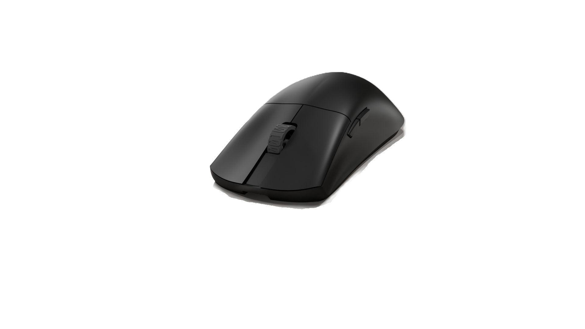
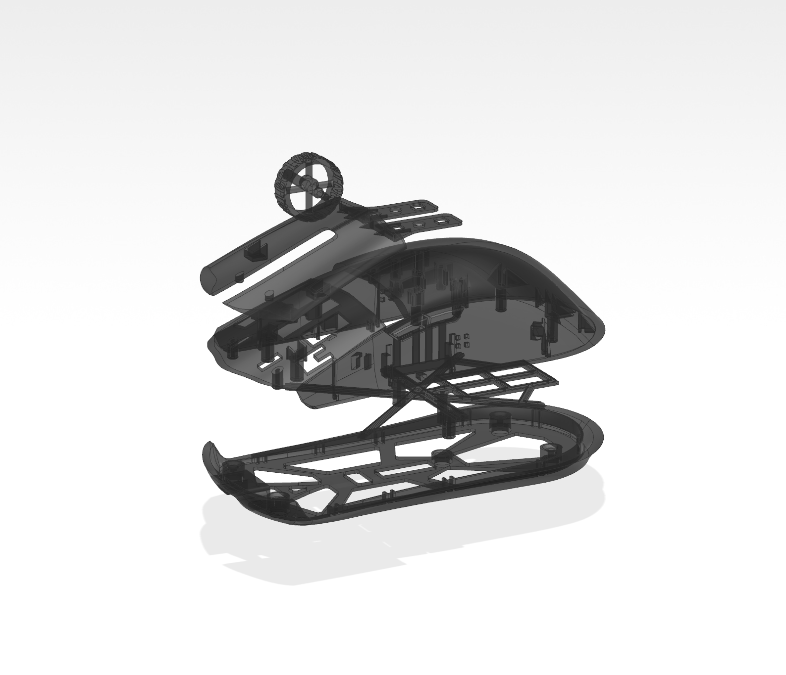
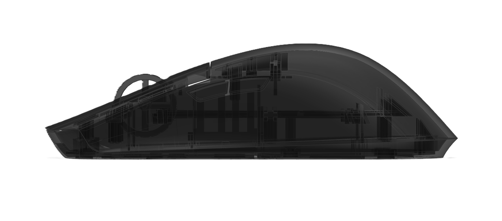
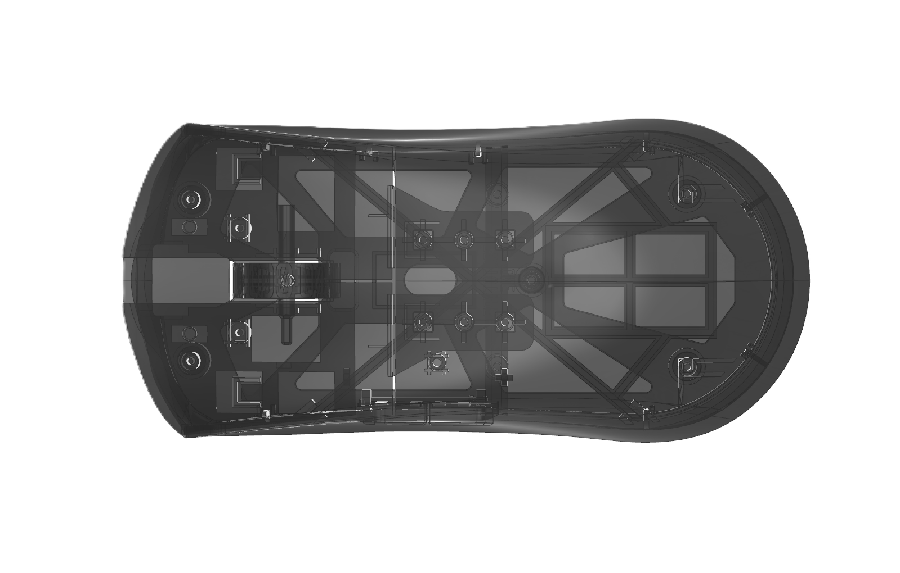
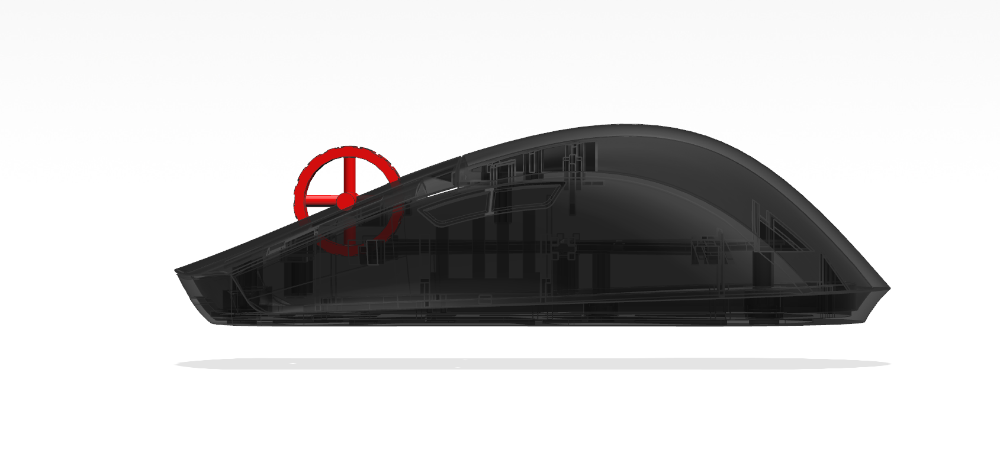
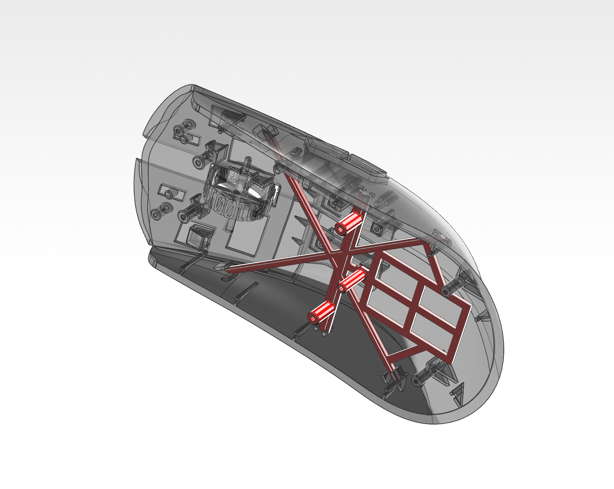
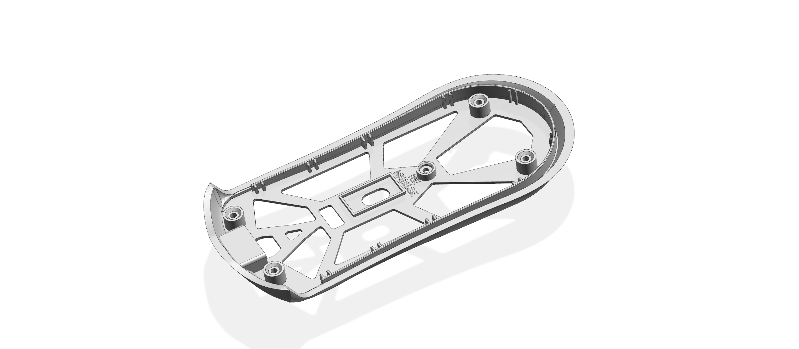
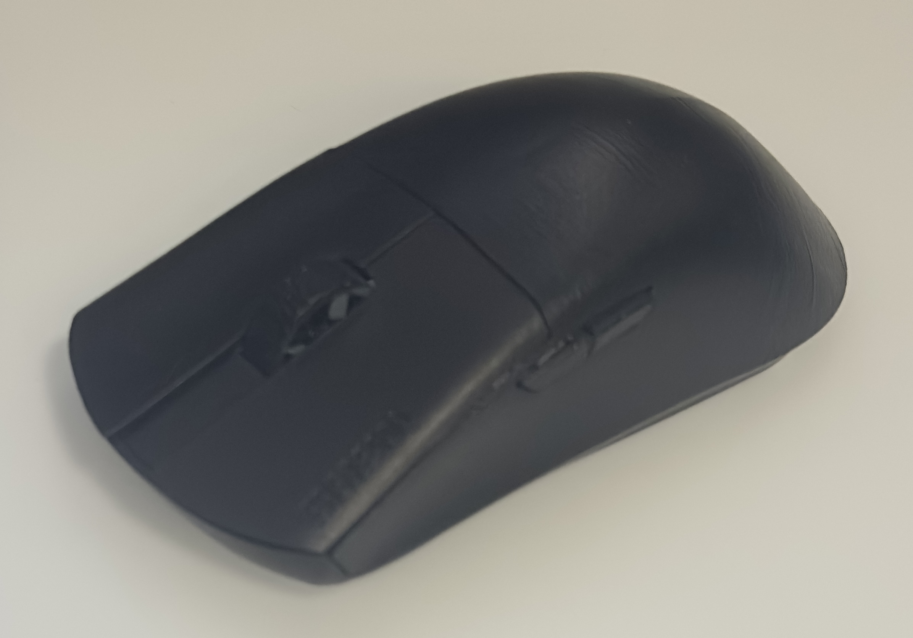
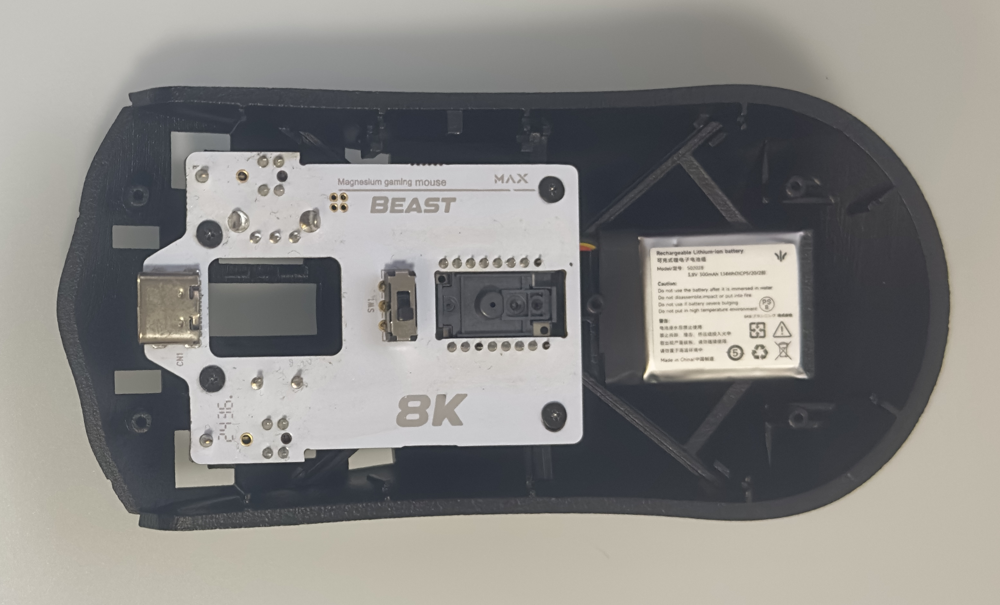

INDEPENDENT PRODUCT DEVELOPMENT / 2026
ERSTE001
FPS GAMING MOUSE | SPEED · AGGRESSION · PRECISION
Why make another gaming mouse?
I have always been interested in gaming peripherals, not only as a player, but also as someone who pays attention to how they are shaped, assembled and used.
Instead of designing a mouse around an existing product brief, I started with a simpler question:
"What kind of mouse would I genuinely want to use?"
ERSTE001 began as a personal FPS mouse project. What started as an exploration of form gradually became a much more complete product development process, involving ergonomics, electronics, mechanical structure, assembly and physical prototyping.

Form Follows Grip: Built for Competitive Control
Ergonomics developed directly from personal competitive grip habits, translating physical tactile needs into precise geometric features.
Palm Support
Raised rear profile engineered for forward driving force and palm stabilization.
Sensor & Pinch Axis
Sensor optical center vertically aligned with the thumb/ring-finger pinch axis to eliminate rotation leverage errors.
Button Grooves
Subtle finger positioning guide grooves for rapid, consistent actuations.
1-3-1 Grip Scroll
Lowered wheel height optimized specifically for 1-3-1 finger placement.
"In FPS mechanics, micro-adjustments rely on the fingertips, while wrist-aiming draws an arc. When the sensor aligns perfectly with the thumb/ring-finger pinch axis, tracking feels like a direct 1:1 extension of your fingertips. Offsetting the sensor introduces a parasitic angular deviation—equivalent to holding a stick in your palm and trying to aim with its far end, destroying muscle memory."


From Concept to Manufacturable Structure
A new problem emerged. The desired low-profile form left limited vertical space inside the mouse, creating critical assembly conflicts.

Encoder assembly violates
the upper shell boundary.
Severe Z-axis conflicts between PCB, sensor, and scroll wheel within the tight outer shell envelope.
Traditional shell designs accumulate tolerance errors, compromising core tracking stability.
CAD geometries must divide into machinable, screw-fastened parts with logical assembly order.
"Rather than compromising the desired sensor position or changing the external form, I began to reconsider the internal structural architecture."
The Sensor Spine Architecture
The answer was the Sensor Spine—a dedicated internal structural reference connecting the upper shell, PCB, and sensor system into a unified datum. Instead of treating the sensor as an isolated electronic component mounted inside the chassis, the Spine establishes a direct structural relationship between the user's hand and the tracking engine.
Sensor Positioning
Maintains the intended sensor location with absolute dimensional stability.
Upper Shell Support
Provides a direct structural reference and compressive support for the upper shell.
PCB Positioning
Creates a defined, stress-free mounting relationship directly with the main PCB.
Assembly Reference
Connects major internal components into a coherent, highly serviceable assembly.

Aggressive Skeletonization for Mass Reduction
The introduction of the Sensor Spine radically altered the role of the bottom shell. By transferring PCB mounting, sensor datum alignment, and compressive rigidity entirely to the Spine, the bottom chassis was relieved of its traditional structural burdens.
Unburdened from core load-bearing duties, the base shell no longer required an enclosed, solid geometry. I was able to aggressively remove non-essential material, retaining only key screw bosses, perimeter frames, and primary stress vectors.
"Extreme mass reduction is not achieved by thinning walls, but by systematically stripping structural responsibilities away from the outer enclosure."

PROTOTYPE
From Digital Structure to Physical Assembly
"The CAD model was brought into physical form through 3D printing, allowing the design to be evaluated as a real assembly rather than a digital model."


Shell components and interfaces were physically checked for fit.
PCB, sensor, switches, encoder and side buttons were assembled into the shell.
Screw locations and structural connections were verified through physical assembly.
The prototype was used to confirm whether the parts could be assembled and maintained in a practical sequence.
07
CONCLUSION
Designing Beyond the Surface
ERSTE001 started as an exploration of FPS mouse form, and evolved into a study of structure, assembly and physical realization.
From the first concept to the final prototype, every decision was driven by one goal: to create a mouse that feels fast, aggressive and precise — not only in appearance, but in the way its structure works.